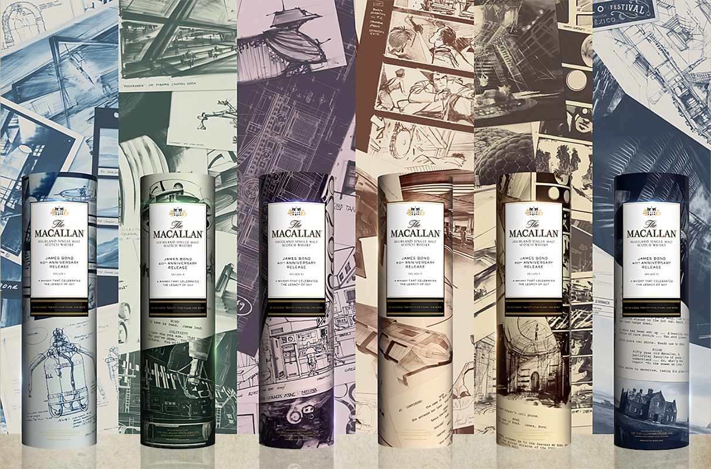

Hai thế kỷ The Macallan
Không những được biết đến là bảo chứng xứ Speyside, The Macallan đã tham gia hơn 90 tác phẩm phim - như lời khẳng định cho sức nặng và bề dày của câu chuyện thương hiệu. Đây còn là minh chứng cho tư duy cải tiến, luôn tìm tòi cách mới để thể hiện bản sắc của thương hiệu để chinh phục người hâm mộ.

Sáu thập kỷ James Bond
Đồng điệu với tinh thần liên tục cải tiến của The Macallan, series 007 đã trải qua 60 năm thách thức của thế giới điện ảnh và sự thay đổi của sáu thế hệ diễn viên thủ vai. Tuy nhiên, James Bond vẫn nhất quán một hình tượng điệp viên kinh điển giữa thế giới phim ảnh cạnh tranh khốc liệt. Bond đã tích lũy những lối thể hiện mới nhất, kết hợp cổ điển với hơi thở đương đại. Từ đó, hình tượng điệp viên trở nên sáng tạo và ưa thích thử thách giới hạn của bản thân.
Đây cũng chính là trải nghiệm với thiết kế đẹp mắt và giàu hương vị của bộ sưu tập The Macallan Kỷ niệm 60 năm James Bond, được giới thiệu ngày 18/05/2023 tại Hotel Majestic Saigon - 01 Đồng Khởi, Bến Nghé, Quận 1, TP.HCM. Bộ sưu tập gồm sáu phiên bản giới hạn, với thiết kế hộp và nhãn chai biểu trưng cho sáu thập kỷ 007.
Bản lĩnh dẫn đầu
James Bond với biệt danh 007 được ra mắt đúng vào thời điểm thị trường bão hòa với những nhân vật siêu anh hùng có phép màu trong những nhiệm vụ siêu nhiên. Bond là một nhân vật “người hùng đời thực”, “người trần mắt thịt” đầu tiên - thông minh, khỏe mạnh, quyến rũ và linh hoạt, nhưng vẫn có điểm yếu và không có phép màu nào bảo vệ anh.
Điều này cũng tương tự với chuẩn mực mới mà The Macallan đã tạo nên cho thế giới Scotch. Từ những sản phẩm đầu tiên của mình cho đến nay, đội ngũ thương hiệu đã trau dồi kỹ nghệ bậc thầy của mình, chế tác những tinh túy thiên nhiên của cao nguyên sông Spey để làm nên hương vị tự nhiên vang danh The Macallan.